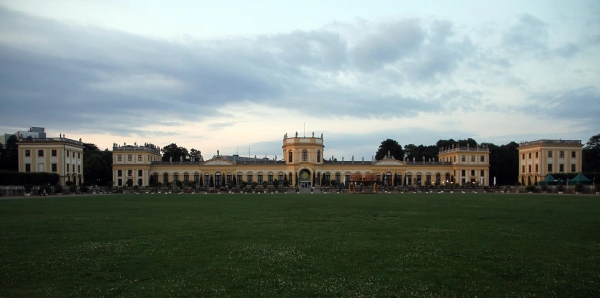
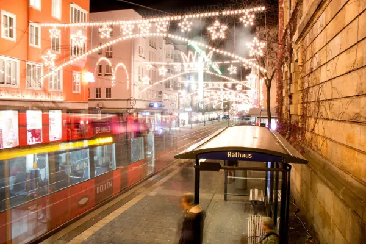
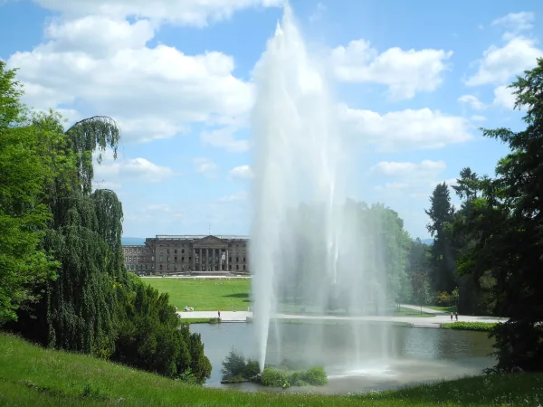

Start / Zissel
Aaron Schiele
geprüft am 09.10.2026
geprüft am 09.10.2026
Was passiert beim Zissel?
Das gehört jedes Jahr dazu:
- Hissen des Zisselherings am Rondell, damit geht es los
- Festzüge zu Wasser und zu Lande
- Wasserski-Show auf der Fulda
- Fackelschwimmen und beleuchtete Boote am Abend
- Abschlussfeuerwerk
- Nostalgischer Jahrmarkt an der Karlswiese mit Riesenrad und Wasserbahn
- Weindorf nahe der Orangerie
- Zisselmeile am Auedamm mit Ständen und Musik
Am schönsten ist der Zissel an den Abenden, wenn die Boote beleuchtet sind und die Uferwiesen voller Menschen. Genaue Uhrzeiten für Festzüge und Feuerwerk stehen im Programm des jeweiligen Jahres.
Wo findet der Zissel statt?
Gefeiert wird an der Fulda, gleich neben der Innenstadt. Die Zisselmeile beginnt am Auedamm an der Drahtbrücke und zieht sich nach Süden, dazu kommen der Südteil der Karlswiese in der Karlsaue und das Gelände an der Spitzhacke.
Die Karlsaue lohnt sich auch an jedem anderen Tag, mehr dazu unter Orangerie und Karlsaue.
Woher kommt der Zissel?
Die Idee entstand bei einem Heringsessen unter Stammtischbrüdern, seit 1926 wird gefeiert, und der Hering ist bis heute das Wahrzeichen. Woher der Name kommt, ist nicht geklärt. Eine schöne Erklärung ist das plattdeutsche „zisseln“: Geld für Fröhlichkeit ausgeben.
Auch außerhalb der Festtage begegnet dir der Zissel: Am Altmarkt steht der Zisselbrunnen, an dem ein Hering Wasser speit, darunter die Köpfe der Kasseler Originale „Ephesus und Kupille“.
Praktisches: Termin und Anreise
Termin
| Zissel | |
|---|---|
| Nächster Termin | 30. Juli bis 2. August 2027 |
| Letzter Termin | 31. Juli bis 3. August 2026 (vorbei) |
| Festgelände | Auedamm, Südteil der Karlswiese, Spitzhacke |
Das Programm für 2027 veröffentlicht der Verein vor dem Fest. Schon angekündigt ist der Zissel-Drachenboot-Cup am 31. Juli 2027 von 9.30 bis etwa 17 Uhr auf dem Gelände des CKS98.
Anreise zum Zissel
Am einfachsten kommst du mit Tram und Bus. Zur Haltestelle Friedrichsplatz fahren die Linien 1, 3, 4, 5, 6 und 8, vom Bahnhof Wilhelmshöhe die Linien 1, 3 und 4. Näher am Festgelände liegen die Haltestellen Rathaus/Fünffensterstraße und Am Weinberg. Schau kurz vor dem Fest in die Fahrplanauskunft der KVG.
Mit dem Auto wird es eng: In den Vorjahren war der Auedamm während des Fests für Autos gesperrt.
Häufige Fragen
Wann ist der Zissel 2027?
Vom 30. Juli bis 2. August 2027. Das genaue Programm kommt vor dem Fest.
Wo ist der Zissel in Kassel?
An der Fulda: am Auedamm, auf dem Südteil der Karlswiese in der Karlsaue und an der Spitzhacke.
Was bedeutet Zissel?
Sicher weiß das niemand. Eine Erklärung ist das plattdeutsche „zisseln“, Geld für Fröhlichkeit ausgeben.
Gibt es beim Zissel ein Feuerwerk?
Ja, zum Abschluss. Die Uhrzeit steht im Jahresprogramm.
Seit wann gibt es den Zissel?
Seit 1926. 2026 hat das Fest seinen 100. Geburtstag gefeiert.
Wo übernachte ich zum Zissel?
Welche Viertel passen, steht unter Übernachten in Kassel. Im Winter lohnt sich der Märchenweihnachtsmarkt.
Quellen abgerufen am 09.10.2026
- Stadt Kassel Zissel · Zisselbrunnen
- Zissel in Kassel e.V. Startseite · Geschichte · Programm · Drachenboot-Cup
- Hessen Kassel Heritage Park Karlsaue
- documenta 16 Besuch und FAQ
Weiterlesen

Orangerie Kassel und Karlsaue
Orangerie Kassel in der Karlsaue: Park frei zugänglich, Planetarium Do bis So 10 bis 17 Uhr für 8 Euro, Marmorbad April bis Oktober gratis. Anreise.
Weiterlesen
Weihnachtsmarkt Kassel 2026
Märchenweihnachtsmarkt Kassel 2026: vom 23. November bis 30. Dezember, täglich 11 bis 20 Uhr. Standorte, Highlights, Tram, Parken und Anreise.
Weiterlesen
Kassel übernachten
Übernachten in Kassel: welche Stadtteile zu deinem Plan passen, warum der Bahnhof Wilhelmshöhe zählt und was die Übernachtungssteuer ausmacht.
Weiterlesen